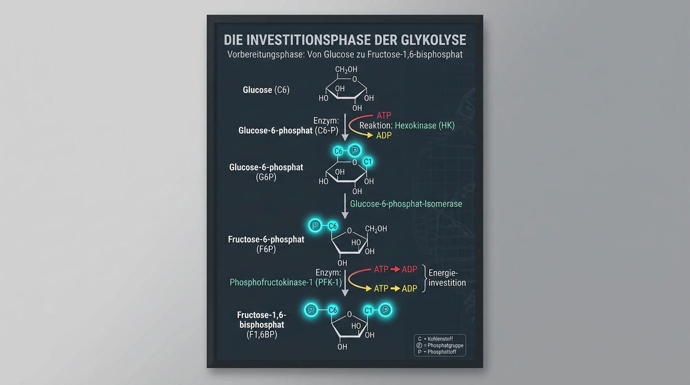
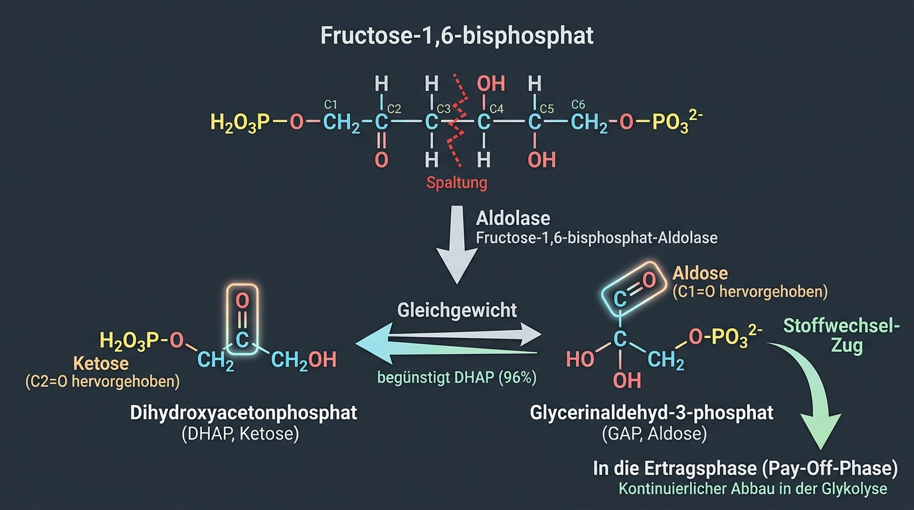
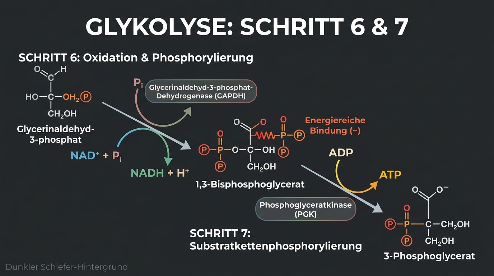
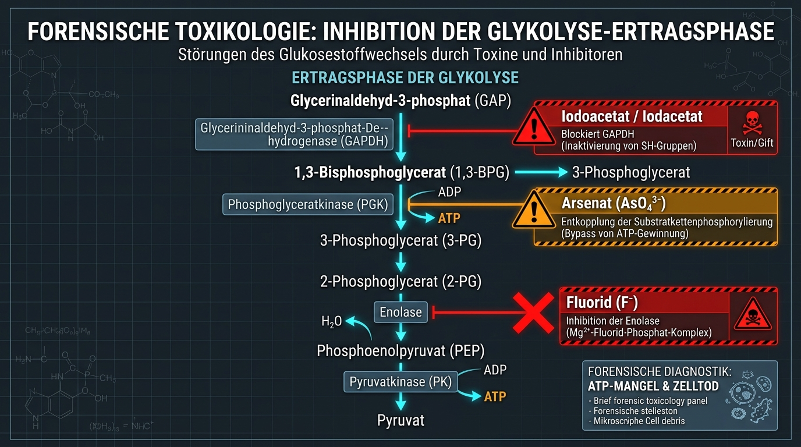

Die Mitochondrien sind ausgefallen. Rettet die Zelle über die Glykolyse!
Durch einen akuten Sauerstoffmangel steht die Atmungskette still. Euch bleiben exakt 30 Minuten, um den zytosolischen Notstromgenerator – die Glykolyse – über vier Sicherheitsräume manuell hochzufahren, bevor das Membranpotenzial kollabiert.
Introza.mp4 nicht gefundenLege deine Videodatei mit dem exakten Namen Introza.mp4 in denselben Ordner wie die index.html und lade die Seite neu.
Jeder Raum enthält einen klaren Arbeitsauftrag, eine Bauplan-Abbildung und 2–3 Teilschritte.
Alle Fachdaten (Enzyme, Regulation, Gifte, ΔG-Werte) findet ihr oben rechts im Handbuch.
Falsche Freigaben kosten wertvolles ATP und ziehen 60 Sekunden vom Countdown ab.
Die Schleuse & Aktivierungsphase
Glukose ist in die Zelle gelangt, droht aber wieder hinauszudiffundieren. Mache das Molekül reaktionsfähig, indem du drei Teilaufgaben löst:
- Schritt 1.1: Wähle die ersten drei Enzyme und ihren ATP-Verbrauch.
- Schritt 1.2: Aktiviere das Schrittmacher-Enzym PFK-1 über die Zellregler.
- Schritt 1.3: Lies die C-Atom-Positionen der Phosphatgruppen aus der Abbildung ab.

Schritt 1.1: Enzym-Kaskade konfigurieren
Ordne den Reaktionen 1 bis 3 jeweils das passende Enzym und den Co-Substrat-Umsatz zu.
Schritt 1.2: Allosterische Regulation der PFK-1
Stelle die vier zellulären Parameter so ein, dass die PFK-1 maximal aktiviert wird (siehe Handbuch: Akte II).
Schritt 1.3: Phosphorylierungs-Code eingeben
Lies aus Abb. 1 die Nummern der Kohlenstoffatome (C1 bis C6) ab, an denen die Phosphatgruppen hängen:
C-Atom mit Phosphat in Glukose-6-phosphat
Neu phosphoryliertes C-Atom in Schritt 3
Bereits besetztes C-Atom in F-1,6-BP
Der Spaltreaktor & Das Isomerie-Paradoxon
Die Aldolase spaltet Fruktose-1,6-bisphosphat in zwei C3-Körper. Doch im Reaktor staut sich DHAP an. Löse das Gleichgewichts-Problem:
- Schritt 2.1: Bestimme die funktionellen Gruppen von GAP und DHAP.
- Schritt 2.2: Erkläre, warum die Reaktion in der Zelle trotz 96% DHAP-Gleichgewicht komplett nach rechts abläuft.

Schritt 2.1: Die zwei Spaltprodukte klassifizieren
Vergleiche die Carbonylgruppen (C=O) in Abb. 2 und ordne beide C3-Moleküle korrekt zu.
Schritt 2.2: Das thermodynamische Paradoxon lösen
Im geschlossenen Reagenzglas liegt das Gleichgewicht der Triosephosphat-Isomerase zu 96 % auf Seite von DHAP (ΔG°' = +7,5 kJ/mol). Warum entsteht in der Zelle dennoch 100 % GAP?
Wie viele Moleküle GAP laufen pro eingesetztem Glukosemolekül in die Ertragsphase?
Das Redox-Kraftwerk & Energetische Kopplung
Die Ertragsphase (Pay-Off) startet! Jetzt wird Oxidation mit Phosphorylierung gekoppelt, um erstmals ATP zu gewinnen:
- Schritt 3.1: Analysiere die Redox-Phosphorylierung an der GAP-Dehydrogenase (Schritt 6).
- Schritt 3.2: Konfiguriere die erste Substratkettenphosphorylierung (Schritt 7).

Schritt 3.1: GAPDH-Reaktionskammer (GAP → 1,3-Bisphosphoglycerat)
Prüfe Abb. 3 genau: Wie entsteht die zweite Phosphatgruppe am C1-Atom ohne ATP-Einsatz?
Schritt 3.2: Substratkettenphosphorylierung (1,3-BPG → 3-PG)
Das hohe Gruppenübertragungspotenzial von 1,3-Bisphosphoglycerat wird jetzt direkt auf ADP übertragen.
Forensische Toxikologie & Master-Bilanz
Drei Zellproben wurden mit Stoffwechselgiften manipuliert. Identifiziere die Toxine und berechne die Gesamtbilanz für die Notabschaltung:
- Schritt 4.1: Ordne den drei Laborbefunden (Alpha, Beta, Gamma) das jeweilige Gift zu.
- Schritt 4.2: Berechne den 4-stelligen Abschluss-Code für 3 normale + 2 arsenatvergiftete Glukosemoleküle.

Schritt 4.1: Drei manipulierte Proben diagnostizieren
Vergleiche die Metabolit-Staus mit Abb. 4 und dem Labor-Handbuch (Akte IV).
Massive Anhäufung von 2-Phosphoglycerat (2-PG); kein PEP und kein Pyruvat messbar.
Kein 1,3-BPG nachweisbar; direkt 3-Phosphoglycerat. NADH wird gebildet, aber kein ATP in Schritt 7!
Anhäufung von GAP und DHAP; vollständiger Stopp ab Schritt 6 (kein NADH).
In einer Zellkultur werden gleichzeitig 3 Moleküle Glukose unter Normalbedingungen UND 2 Moleküle Glukose in Anwesenheit von Arsenat (AsO₄³⁻) vollständig bis zum Pyruvat abgebaut.
Netto-ATP gesamt (aus allen 5 Glukose)
Gebildete NADH-Moleküle gesamt
Gebildete Pyruvat-Moleküle gesamt
Freigesetztes H₂O (Schritt 9) gesamt
Zellulärer Blackout abgewendet!
Hervorragende Arbeit! Die Glykolyse läuft stabil im Fließgleichgewicht, alle Inhibitoren wurden identifiziert und die zelluläre ATP-Versorgung ist gesichert.
Zeit abgelaufen – ATP-Kollaps
Das zelluläre Membranpotenzial ist zusammengebrochen, bevor der Stoffwechselweg stabilisiert werden konnte.